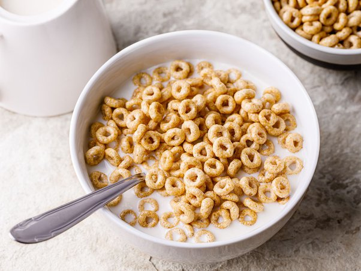

Toasted Peanut Butter and Jelly

Description
You can never not enjoy a classic bowl of cereal. Follow along to make a bowl of cereal the correct way.
Ingredients
Steps
- Grab a bowl and pour in the desired amount of cereal
- Pour in the desired amount of milk
- Enjoy!